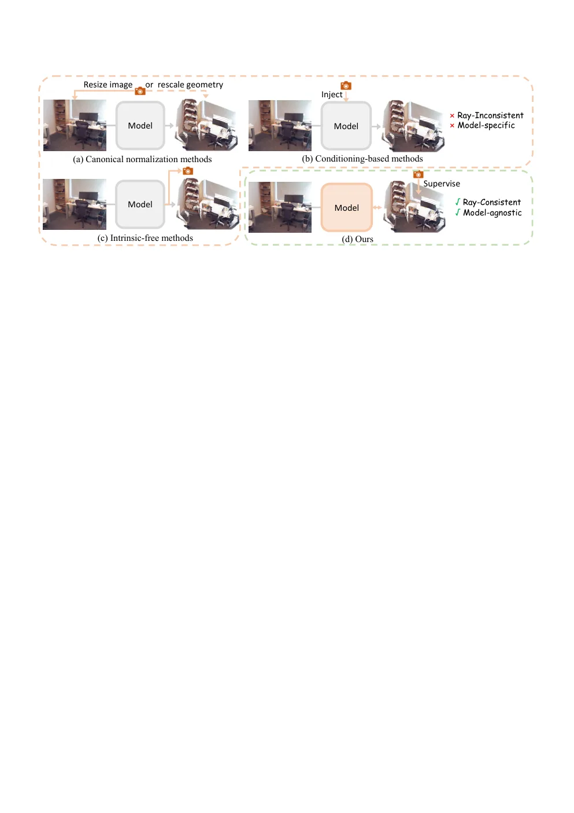
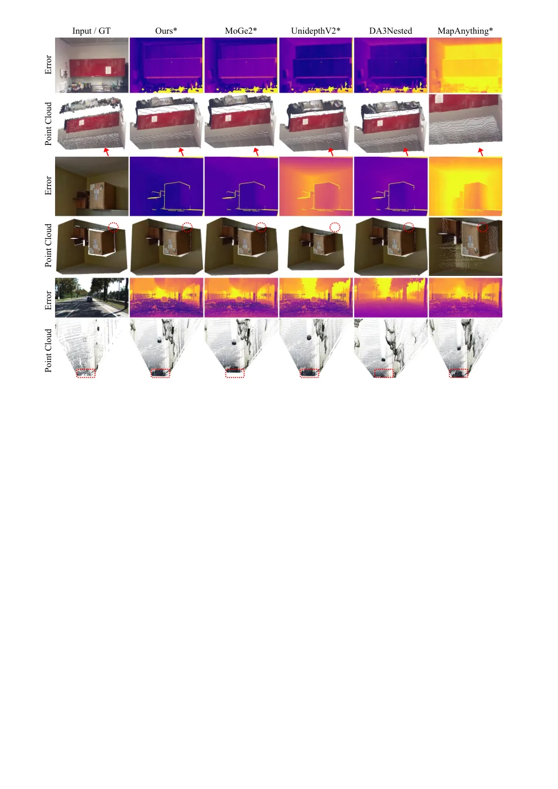
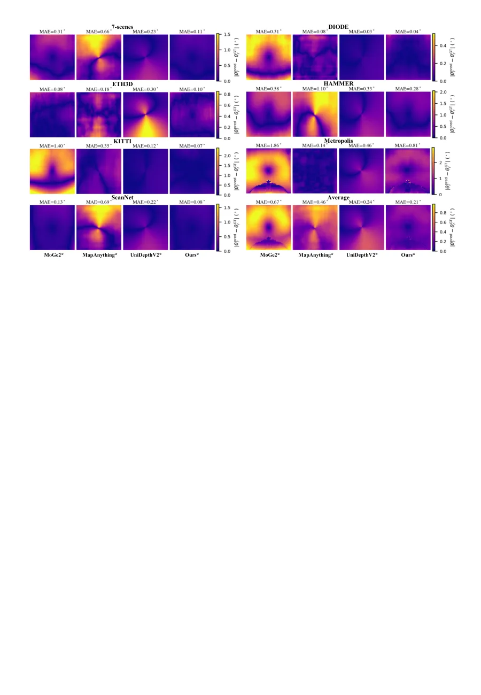
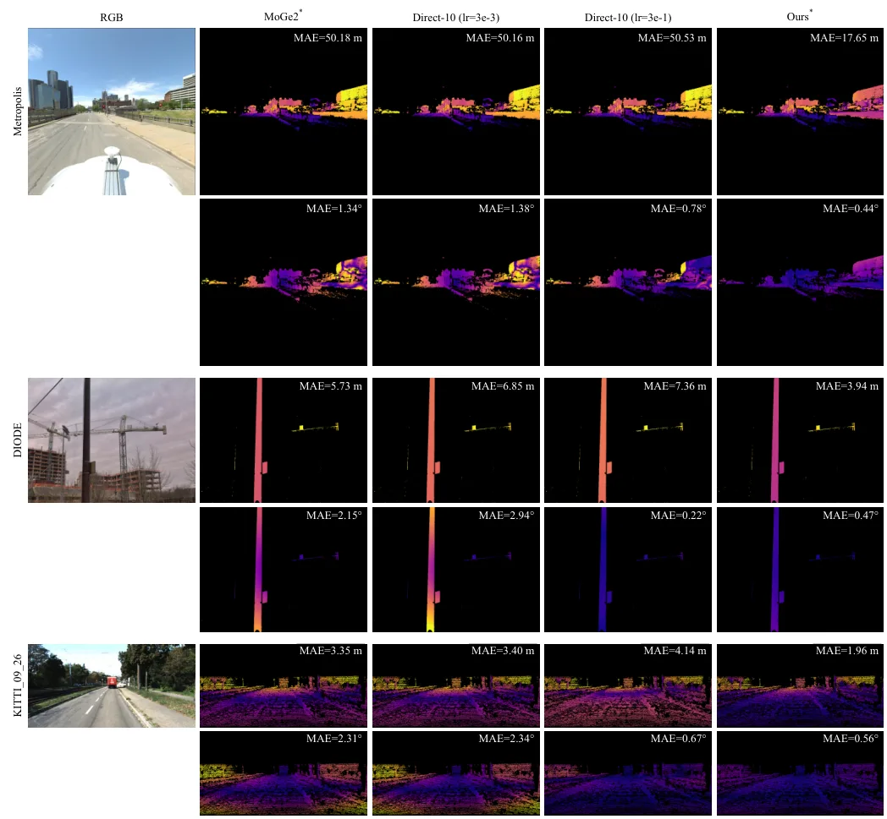
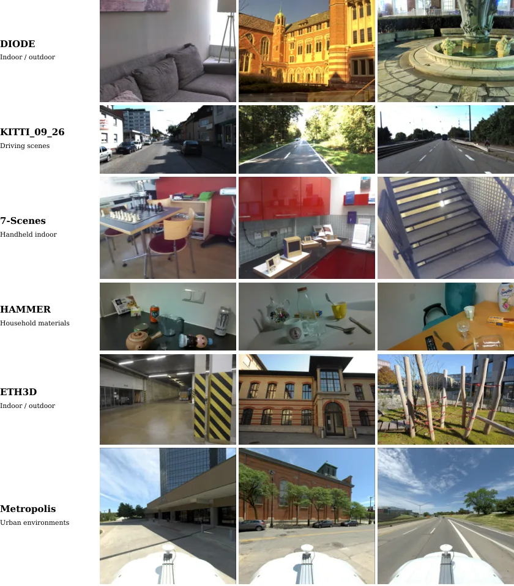

IntriAdapt：把相机内参当作输出端几何校验器的测试时适配
IntriAdapt: Generalizable Intrinsic-Guided Test-Time Adaptation for Metric Geometry Estimation
IntriAdapt 的核心是把“已知内参”从输入条件改造成自监督信号。它先按 MoGe 系列的仿射不变点图约定，用已知焦距解出轴向平移 τ，把点图换算成逐像素视线图，再与 K_gt^-1[u,v,1] 归一化得到的真值视线图求余弦残差；梯度经点图回传到插在 DINOv2 编码器每个注意力层的 rank-16 LoRA（1.57M 参数，约主干 0.4%），主干全冻结。单图每张跑 10 步；序列模式用 1 条短序列训 20 次更新后冻结，复用到同传感器其他序列。推理末端再加一步与适配正交的 output-time reprojection（沿真值视线按原深度重排点）。单图 10 基准平均排名 2.39（MoGe2* 3.16、MoGe2 3.58），序列 6 基准平均排名 2.79（MoGe2* 4.18），KITTI 的焦距/平移求解残差从 7.98 降到 0.92，相机级适配一次性耗时 117.23 s，推理仍为 0.24 s/帧。
作者、单位与技术谱系 · Research context
作者与单位
研究脉络
- MoGe / MoGe2（Wang et al., CVPR 2025 / NeurIPS 2025）方法基座关系：本文直接以 MoGe2 为默认冻结主干，并沿用其仿射不变点图参数化与“后验解焦距+平移”的求解式（论文式 2），只把这个求解从“估计内参”翻转成“在已知内参下审计点图”。[论文参考文献 [1][2] 与第 III-A 节]
- CAPA（Ke et al., 2026, arXiv:2602.14751）方法上游（最近的同类工作）关系：CAPA 同样冻结 3D 基础模型、只调 LoRA 或视觉提示，并在视频上共享适配参数；IntriAdapt 保留这个参数高效形态，但把监督源从稀疏深度换成内参诱导的视线残差。[CAPA 原文（论文参考文献 [11]）]
- Marigold-DC（Viola et al., ICCV 2025）方法上游（问题设定来源）关系：Marigold-DC 证明在推理时用残差去引导预训练深度模型可以显著改度量精度，但它的残差来自稀疏深度观测；本文借用“推理时用残差纠偏”的范式，替换掉需要深度传感器的那一环。[论文第 I 节与参考文献 [10]]
合作网络
- vivo BlueImage Lab 作者群Zizheng Yan / Jingyu Zhuang / Jinwei Chen / Qingnan Fan → vivo BlueImage Lab, vivo Mobile Communication Co., Ltd.关系：共同署名（同单位）[arXiv v1 TeX 源 main.tex 作者注释]
- CUHK-Shenzhen FNii / SSE 作者群Jiaxing Chen → Shuguang Cui关系：共同署名（同单位）[arXiv v1 TeX 源 main.tex 作者注释]
- MoGe2 → IntriAdapt 技术依赖边MoGe2（Wang et al.） → IntriAdapt关系：模型基座依赖[论文第 III-A、IV-A 节]
作者姓名、单位与角色来自 arXiv v1 的 TeX 源注释（作者本人提供）；技术谱系来自论文引用与实验设置，属于有来源的解读。未发现 vivo 与两所高校之间的公开项目合作或师生关系证据，因此不写入网络图。
方法本质拆解 · What actually changed
是不是微调？
是测试时微调，但不是全参微调：主干（MoGe2 的 DINOv2 编码器与预测头）全部冻结，只训练插在编码器每个注意力层的 rank-16 LoRA，共 1.57M 参数、约主干 0.4%。单图模式每张重置适配器跑 10 步；序列模式用 1 条短序列训 20 次更新（每次 50% 帧、4 次梯度累积），训完即冻结，拿去推理同传感器的其他序列，不再更新。
有没有额外约束？
输入侧只多了一个东西：已知内参 K_gt 以及由它定义的视线图。目标函数是逐像素余弦残差，作用在归一化视线方向上，而不是深度值或 3D 坐标；τ* 每步用 f_gt 解一次并被 detach，等价于把平移自由度从优化里拿掉，只允许网络改形状。没有深度先验、没有平滑正则、没有多视图重投影约束。
推理/后端到底做了什么？
推理分两段：先跑 TTA 得到适配权重，再对每帧做一次前向（0.24 s/帧，与基线相同），最后加一步 output-time reprojection，把点沿真值视线按预测深度重新放置。没有 BA、没有位姿优化、没有滑窗，也没有对点云做滤波；reprojection 是纯闭式运算，不需要学习，也不改变深度值。
方法本质是什么？
它改的不是输出后处理，而是模型内部的“视线—深度”耦合表示：点图模型用同一套特征编码方向与距离，压低视线不一致会连带重塑点云形状，从而把深度偏差一起修掉。关键证据是直接优化点图能降视线角误差却降不了 metric 深度，而 LoRA 版两者都降。它没有做全局优化，也没有引入跨帧几何约束，所以对多视图一致性的帮助是间接的。
输入图像与已知内参 → 在冻结主干的编码器上挂 LoRA → 最小化预测视线与内参视线的余弦残差 → 得到与相机一致、度量深度更好的点图，且一套权重可复用于同传感器。

结论与问题Conclusion & Motivation
核心结论
IntriAdapt 的核心主张是：相机内参不该只作为前向输入，而应当充当输出的几何校验器。作者把预测点图换算成逐像素视线图，与已知内参定义的视线图求余弦残差，再只用这个残差训练一个 1.57M 参数的 LoRA 适配器（约主干权重的 0.4%），因此不需要深度真值、不需要稀疏深度、也不需要第二个视角。在 10 个单图零样本基准上平均排名 2.39，优于 MoGe2 的 3.58 和带真值内参的 MoGe2* 的 3.16；在按传感器重组的序列基准（去 ScanNet 的 6 数据集口径）上平均排名 2.79，优于 MoGe2* 的 4.18。作者进一步说明这种修正是相机级而非逐图级的：在一条短序列上训好的适配器可直接用于同传感器的其他序列。
动机与问题
单目度量几何本质病态：把场景距离和焦距同时放大两倍，成像几乎不变。现有三条路线都没有把内参用成监督信号——canonical normalization 在训练时把数据归一到参考焦距，conditioning 方法把内参当旁路输入，intrinsic-free 方法从图像里估焦距或尺度。即使把真值内参喂进去（oracle 变体），输出的点图仍可能与这个相机不一致，因为后验求解只是重新分配平移与焦距，把偏差吸收进焦距而不是修正形状。TTA 路线（Marigold-DC、CAPA）能改预训练先验，但监督来自稀疏深度或 LiDAR；只有 RGB 加标定内参时这条监督不存在，这正是本文要补的结构性缺口。
方法Method
方法总览
给定图像，冻结主干（MoGe2）输出仿射不变点图 P̂；先用已知焦距 f_gt 解一次单参数轴向平移 τ*（以主点居中、像素为正方形为前提，平移退化为 (0,0,τ)），得到位移补偿后的相机系点云，再归一化成逐像素视线 R_pred。另一端用 K_gt 的逆作用于齐次像素坐标并归一化，得到与场景无关的真值视线图 R_gt。损失是逐像素余弦残差 L_ray = mean(1 − R_pred·R_gt)，梯度经 P̂ 回传到 LoRA（rank 16，插在 DINOv2 编码器每个注意力层），主干全部冻结。推理时先做 TTA 再补一步 output-time reprojection，把每个点沿真值视线按原深度重新放置。
关键技术细节
有三个设计点值得单独记。其一，τ* 被 detach 出计算图，只作为常量参与视线构造，因此梯度无法通过改平移来“作弊”，必须改点图形状。其二，LoRA 插在编码器而不是预测头，作者的理由是这样同一目标能套到不同输出参数化的几何基础模型上，实验里确实换了 UniDepthV2 和 MapAnything 两套头。其三，reprojection 与 adaptation 正交：reprojection 只沿正确视线重排点、保留原深度，所以能修视线但不能修深度偏差；adaptation 改的是深度值本身。作者给出的分解是：相对 oracle 无投影基线，单用 adaptation 把 metric Point Rel 降 9.5%，单用 reprojection 只降 2.0%，两者合用降 10.5%。

实验Experiments
实验设置
单图侧沿用 MoGe2 协议的 10 个零样本基准，报告 scale-invariant、affine-invariant、metric 三个层级，点云与深度两个通道，各含 AbsRel 与 δ^1.03，并给出跨数据集平均排名。序列侧按物理传感器重组 7 个基准（7-Scenes、ScanNet、Metropolis、ETH3D、KITTI、DIODE、HAMMER），共 191 条序列、13,193 帧；因 ScanNet 与部分基线训练集重叠，主表用去 ScanNet 的 6 数据集口径（135 条序列、7,593 帧），水平 FoV 覆盖 42.3°–90.0°。对照方法包括 MoGe2、UniDepthV2、DA3、VGGT、DA3-Nested、MapAnything、VideoDA 及其 oracle 变体，全部使用公开权重。默认配置为 MoGe2 加 rank-16 LoRA、AdamW、学习率 3e-5、单图 10 步、Seq-1 用 20 次更新且每次覆盖 50% 帧、4 次梯度累积、64×64 视线网格，硬件为单张 A100。
实验数字与比较
单图（表 II，10 基准平均）：Ours* 平均排名 2.39，MoGe2* 3.16、UniDepthV2* 3.17、MoGe2 3.58、DA3 5.50、MapAnything 6.57；metric Point Rel 7.26 对 MoGe2* 7.94，metric Depth Rel 12.11 对 13.14，metric Depth δ^1.03 25.02 对 22.78。序列（表 III，6 基准）：平均排名 2.79 对 MoGe2* 4.18、MoGe2 5.04、MapAnything* 5.74、VideoDA 10.83；metric Point Rel 8.37 对 9.25，metric Depth Rel 12.47 对 13.92。几何一致性（表 V）：最终焦距/平移求解残差在 KITTI 从 7.98 降到 0.92（−88.5%），在 7-Scenes 从 1.40 降到 0.30（−78.6%）。时序一致性（表 IV，OPW AbsRel）：平均 0.274 对 MoGe2* 0.292、MoGe2 0.319、VideoDA 0.335；Metropolis 上 0.338 对 0.398。成本（表 VI，KITTI 的 Seq-1，A100）：推理 0.24 s/帧不变，峰值显存 2.58→2.64 GB，一次性适配 117.23 s，折算 N 帧后约 0.24 + 117.23/N 秒每帧。
消融/失败边界
第一组是“改输出还是改权重”的对照：直接优化点图 Direct-10（学习率 3e-3）的 metric Point/Depth Rel 是 9.15/14.01，比不优化的 9.10/13.72 还差；学习率提到 3e-1 直接崩到 24.29/57.81，加 z 坐标保留惩罚也无改善；而 LoRA 版是 8.36/12.56，平均排名 1.65 对 2.58。这说明“能降视线角残差”不等于“能修深度”，必须动模型内部表示。第二组是去掉 output-time reprojection：metric Point Rel 从 8.06 退到 8.15、δ^1.03 从 38.48 退到 36.82，投影本身只贡献约 1%。第三组是适配数据形式：不适配 8.83/13.26 → Img-1 8.38/12.57 → Img-10 8.14/12.22 → Seq-1 8.06/11.99 → Seq-5 7.94/11.73，Seq-1 之后边际收益只有约 1.5% 与 2.2%。失败边界很清楚：内参估计不准时 reprojection 反而变差（非 oracle 的 MoGe2 行），并且主点居中、方形像素的假设把平移压成单参数，偏心主点或带畸变的相机不在这套公式里。
局限与迁移Limitations & Transfer
局限与待核验
作者在正文没有单列 Limitations 章节，只承认两类限制：τ 的求解依赖主点居中与方形像素假设，以及非 oracle 内参下投影会略微退化。我们的待核验项有四个：一是畸变模型完全没进公式，广角、鱼眼相机上的表现未知；二是适配器是相机专用的，换传感器要重新付 117.23 s 的代价，论文没有给“内参误差多大时失效”的灵敏度曲线；三是单图 TTA 的 10 步开销没有单独计时（表 VI 只报 Seq-1），逐图部署成本待核验；四是评测以 AbsRel 与 δ 的均值/中位为准，未报告方差或显著性检验，表里 0.05–0.1 量级的差距是否稳定需要复跑才能确认。
与你研究路线的关系
最直接的可迁移点是把“已知标定”变成自监督信号，而不是像多数融合系统那样只把它当外参常量：任何输出相机系点图或深度的模块，都可以用同样的视线一致性残差做在线校准，且不需要真值深度。第二个可迁移点是适配的粒度选择——按传感器共享一个适配器，把成本摊到整段数据，这与多传感器“一次标定、长期复用”的逻辑一致；如果手上有 IMU 或轮速，还能把 τ 与尺度先验接进来当额外约束。第三个是诊断价值：ray residual 是一个不需要真值的自检量，可以当作前端退化报警。下一步实验建议：在自己的序列上固定同一重建，比较“原样 / 仅 reprojection / LoRA 适配 / 适配+投影”四档，并人为扰动内参（焦距 ±2%、±5%）画出灵敏度曲线，确认增益不是靠隐式重标定吃掉的。







